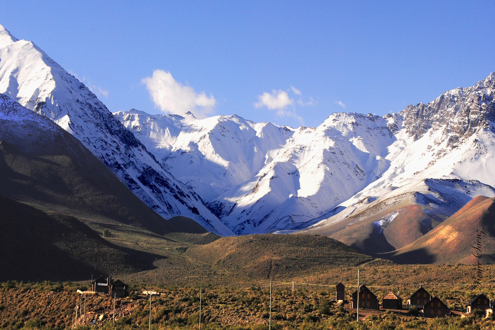
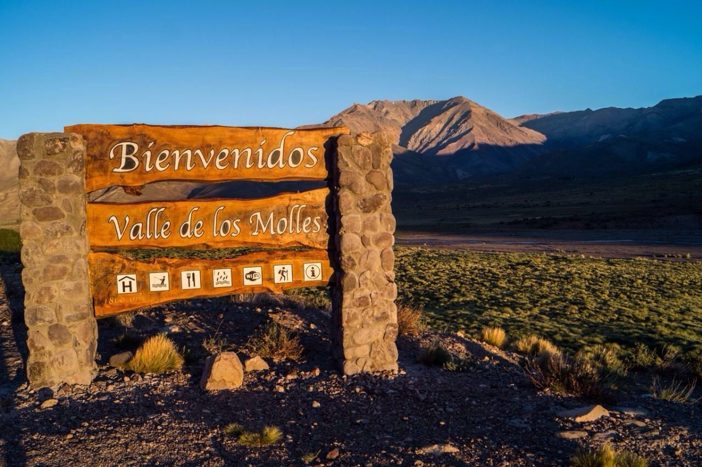
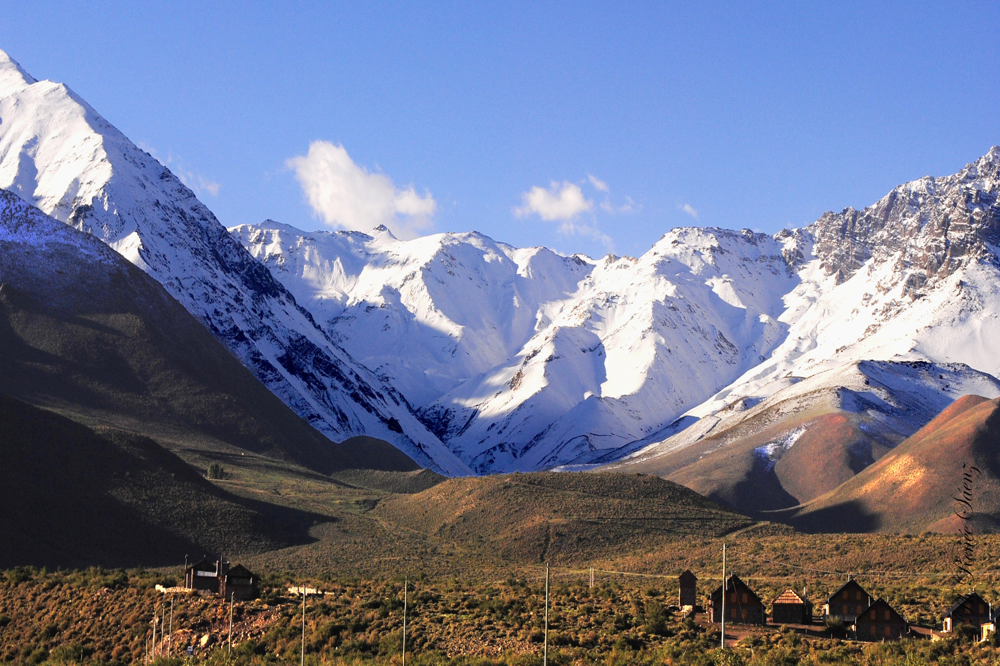
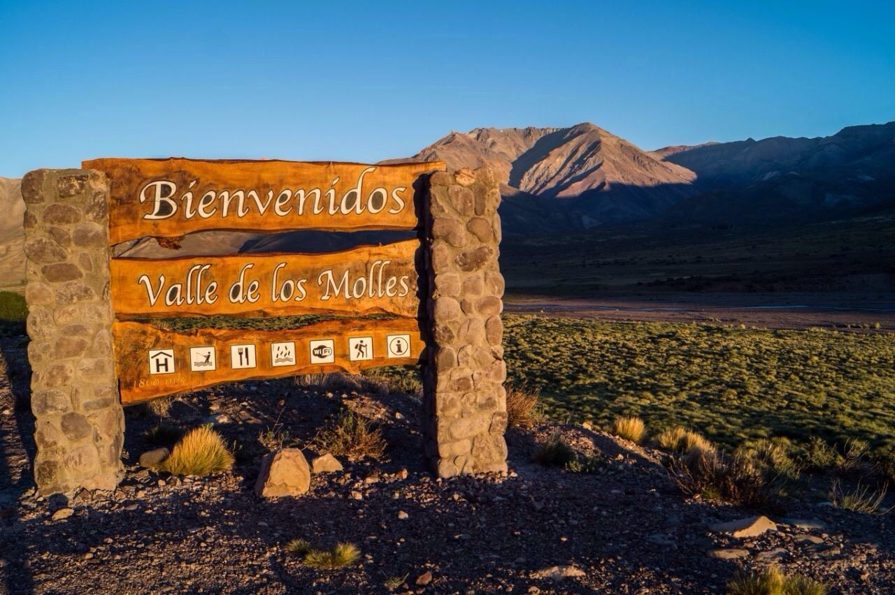

Cabalgatas Valle Andino
Nosotros
Somos Cabalgatas Valle Andino, una agencia de turismo que busca desarrollar experiencias únicas e inolvidables. Descubrí Mendoza como nunca antes con sus impresionantes valles y vistas nocturnas. Encargate de disfrutar, de lo demás nos encargamos nosotros. Estamos comprometidos con la sostenibilidad y la preservación el entorno natural. Valoramos y respetamos la belleza del Valle de los Molles y trabajamos día a día para promover el turismo sustentable y responsable.
La Experiencia
Vamos a vivir 5 días de una experiencia distinta, montando a caballo, disfrutando de la naturaleza del Valle de los Molles, ubicado a 50 kilómetros de la ciudad de Malargüe, por la ruta 222. Las montañas, el cielo, caballos y la cultura regional, una combinación perfecta para disfrutar de uno de los valles más genuinos que tiene Malargüe. Nos acompañarán guías de montaña y baqueanos de la zona, te ofreceremos la calma del valle y noches estrelladas, una alternativa para relajarse y contemplar la naturaleza. Para mas informacion completa el formulario de contacto.
¿Que está incluido en la excursión?
La excursion incluye pension completa (comida y bebida), todo el equipamiento necesario para acampar y cabalgar, pack de fotos por fotografo profesional, dos noches en cabaña con agua caliente, cocina equipada, etc. Tambien tenemos opciones en otros lenguajes para que nuestros clientes extranjeros disfruten de las charlas de los guías.
Contacto
Galeria
 


